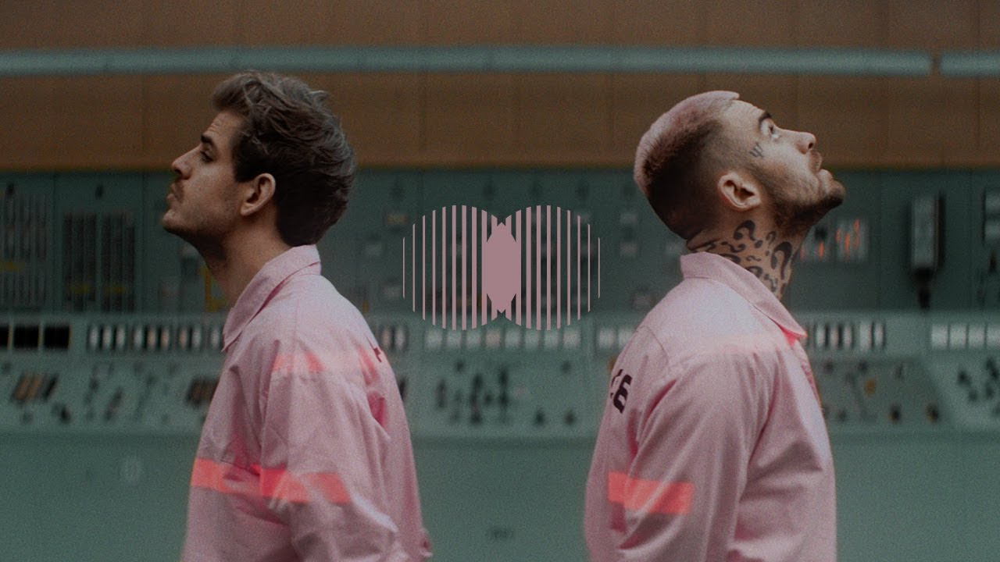
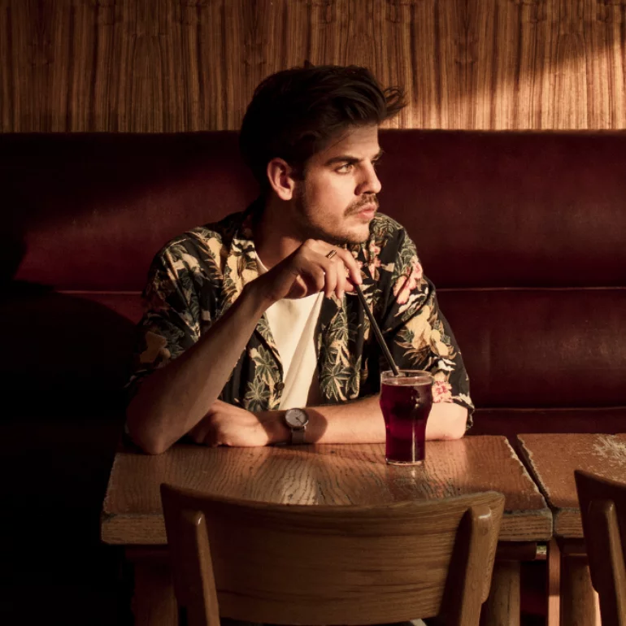

Rozwój kariery Taco i Projekt Taconafide
W lutym 2016 zaczął pisać teksty na swój pierwszy album studyjny. Również w lutym udzielił wywiadu dla strony Sport.pl, na temat piłki nożnej, gdzie powiedział m.in. o tym, że od dwudziestego roku życia jest fanem drużyny Tottenham Hotspur. W 2016 bez zapowiedzi ukazał się czwarty minialbum rapera pt. Wosk za darmo do pobrania na stronie internetowej rapera. Album spotkał się z dobrym przyjęciem krytyków muzycznych, recenzenci jednak zwrócili uwagę na mniej błyskotliwe teksty niż poprzednio oraz na to, że raper miejscami potrafi przynudzać. Utwór z albumu, pt. „Wiatr”, stał się największym przebojem z płyty osiągając prawie 10 milionów wyświetleń w serwisie YouTube.2 listopada wydał pierwszy album studyjny, zatytułowany Marmur, który trafił do sprzedaży 2 grudnia wraz z poprzednią płytą rapera, tj. Wosk. Płyty zadebiutowały kolejno na 3. i 14. miejscu polskiej listy przebojów – . Albumy uzyskały pozytywne, choć trochę słabsze niż poprzednich płyt, oceny krytyków i środowisko. Do lutego 2017 sprzedano ponad 15 000 kopii albumu Marmur, który uzyskał status złotej płyty. Utwór z tego albumu, pt. „Święcące prostokąty” dotarł do 23. miejsca listy Przebojów Programu Trzeciego Polskiego Radia. Tego samego roku raper wyruszył w drugą trasę koncertową Marmur Tour. Raper Sokół w wywiadzie dla Gazety.pl pochwalił Taco Hemingwaya, dodając że docenia jego pracę. W 2017 po raz kolejny został nominowany do nagrody Fryderyka za album Marmur, w kategorii Album roku Hip-Hop, przegrał jednak z płytą Życie po śmierci, rapera O.S.T.R. W 2017 raper po raz drugi wystąpił na Open’er Festival, tym razem na głównej scenie, gdzie na ostatnim utworze „Następna stacja” z powodu zalania przez deszcz sprzętu producenta artysta musiał dokończyć utwór bez podkładu muzycznego.W lipcu 2017 zapowiedział nowy mini album. 30 lipca 2017 ukazał się singiel pt. „Nostalgia”, do którego powstał klip oraz cyfrowo jego nowy minialbum pt. Szprycer, który w wersji fizycznej miał premierę 25 sierpnia. Płyta zadebiutowała na 1. miejscu polskiej listy przebojów – OLiS. Raper zmienił stylistykę na albumie, przez co został słabo przyjęty przez środowisko oraz krytyków. Utworem „Nostalgia” raper po raz kolejny trafił na listy przebojów radiowych. Płyta, tak jak każda poprzednia, była udostępniona za darmo do pobrania na stronie internetowej rapera. Po premierze płyty raper wyruszył w trasę koncertową 2017 Tour, podczas której zagrał koncerty w 13 miastach sprzedając łącznie ponad 23 tys. biletów. Zwieńczeniem trasy był występ w warszawskim Torwarze, gdzie raper wypełnił całą halę ponad 6 tysiącami . W tym samym okresie nagrał także utwór z Otsochodzi pt. „Nowy kolor” wraz z teledyskiem. Piosenka stała się hitem, klip w kilka miesięcy od premiery obejrzało ponad 25 milionów osób na platformie YouTube. Utwór również został wybrany singlem roku 2017 według takich serwisów jak Glamrap, Newonce oraz Interia. Piosenka także dotarła do 4. miejsca na liście przebojów Radia Poznań. W październiku raper wypuścił limitowaną liczbę koszulek, bluz i czapek, wzorowanych na motywach jego płyt. W 2017 wyszedł również remix utworu „Marsz, marsz” pt. „Gdybyś nie istniała” autorstwa Szustego, który w kilka miesięcy stał się najpopularniejszym utworem artysty na platformie YouTube. W grudniu program Saturday Night Live Polska stworzył parodię utworu „Nostalgia”, wraz z teledyskiem. 6 marca 2018 płyta Szprycer została nominowana do nagrody Fryderyka w kategorii Album roku hip-hop i wygrała plebiscyt. Raper po raz kolejny nie pojawił się na gali odebrania nagród. Również do marca 2018 płyta sprzedała się w ponad 30 tys. kopii, zdobywając status platynowej.
W marcu 2018 ogłosił, że nagra wspólną płytę z Quebonafide. 16 marca 2018 ukazał się pierwszy singiel duetu Taconafide pt. „Art-B” na kanale wytwórni QueQuality. Wraz z premierą wystartował preorder albumu[82]. Raperzy zapowiedzieli wspólną, ogólnopolską trasę koncertową promującą płytę pt. Ekodiesel Tour. Artyści w dwa tygodnie wyprzedali bilety na koncert w Torwarze oraz w szybkim tempie wyprzedali resztę koncertów na wielkich halach w Polsce. Jest to największy sukces komercyjny dotyczący koncertów w historii polskiego rapu.Raper podczas trasy Café Belga Tour, 201822 marca 2018 wydali drugi singiel pt. „Tamagotchi” wraz z teledyskiem. Piosenka okazała się wielkim sukcesem komercyjnym docierając do 22. miejsca listy najlepiej sprzedających się singli w Polsce – AirPlay. Utwór pobił rekord Eda Sheerana w kategorii najczęściej słuchanego singla w serwisie Spotify w Polsce. Sam utwór utrzymywał się tydzień na 1. miejscu karty czasu serwisu YouTube osiągając ponad 10 mln wyświetleń w dziesięć dni, ostatecznie uzyskał wynik ponad 60 mln wyświetleń. Utwór również okazał się wielkim przebojem radiowym, trafiając na szczyty listy przebojów w wielu rozgłośniach, m.in. radiu Eska, Radiu Szczecin, Radiu Trójka czy RMF FM. Dzień później, 23 marca producent Supremé na swoim Instagramie zapowiedział utwór pt. „Girø”, który pojawi się na płycie. 27 marca zostały ujawnione dodatki do edycji limitowanej oraz zagadkowe grafiki zapowiadające gościnne występy na albumie. 1 kwietnia 2018 na instagramowym koncie Taconafide pojawiła się cała tracklista albumu, zatytułowanego Soma 0,5 mg, a także materiału bonusowego o nazwie 0,25 mg. Ujawniono również producentów oraz gości na dodatkowym CD, którymi okazali się: Bedoes, Kękę, Paluch, Kaz Bałagane, Dawid Podsiadło oraz Białas. Singiel Tamagotchi ustanowił również rekord na Spotify jako najczęściej słuchany utwór w przeciągu tygodnia, osiągając 1 797 617 odsłuchów (wcześniej rekord należał do Eda Sheerana z wynikiem 767 383 odtworzeń). 4 kwietnia 2018 ukazał się kolejny singiel pt. „Metallica 808” na kanale Taco. 9 kwietnia 2018 premierę ma czwarty singiel pt. „Kryptowaluty” na kanale wytwórni QueQuality. 13 kwietnia 2018 miała miejsce premiera całej płyty Soma 0,5 mg, która w całości została opublikowana na youtubowych kanałach Taco i QueQuality oraz na serwisach streamingowych. Parę dni po premierze na serwisach streamingowych został również udostępniony dodatkowy materiał dodawany do płyty. Cała płyta trafiła na pierwsze Top 15 w serwisie Spotify. Płyta zebrała mieszane oceny krytyków, większość zarzuciła, iż projekt jest nastawiony na sukces komercyjny. Album zadebiutował na 1. miejscu polskiej listy przebojów – OLiS, sprzedając się w ponad 30 tys. egzemplarzy zdobywając tym samym status platynowej płyty. Płyta był również najlepiej sprzedającym się albumem w Polsce w kwietniu oraz w maju w 2018 roku. 4 lipca 2018 roku albumowi przyznano status podwójnej platynowej płyty, za sprzedaż 60 tys. egzemplarzy. Płyta była również najlepiej sprzedającym się krążkiem pierwszego półrocza w Polsce. 6 lipca raper trzeci raz wystąpił na Open’er Festival w Gdyni tym razem z raperem Quebonafide, jako Taconafide. Muzycy zapowiedzieli uprzednio, że będzie to ich ostatni koncert w duecie. Według medialnych relacji, raperzy zgromadzili kilkudziesięciotysięczną publiczność, porównywalną z największymi gwiazdami wieczoru, zespołem Gorillaz, a zarazem największą spośród polskich wykonawców w historii Open’era.
W zinie dodawanym do zamówienia przedpremierowego raper zapowiedział, że wyda w tym roku jeszcze dwa solowe projekty. Od połowy 2018 raper częściowo przeprowadził się z powrotem do Londynu do swojej dziewczyny. Pierwszy z nich, to drugi studyjny album artysty zatytułowany Café Belga, został wydany bez zapowiedzi 13 lipca 2018. Drugi z nich to minialbum dodawany do albumu, pt. Flagey. Muzyk po raz kolejny zadebiutował z płytą na 1. miejscu polskiej listy przebojów – OLiS. Album dwa tygodnie po premierze otrzymał status złotej płyty. Album zebrał zróżnicowane oceny, w większości pozytywne, krytycy chwalili iż album jest lepszy w porównaniu do poprzednich dzieł artysty, czyli Szprycera i Somy 0,5 mg. Pochodzący z albumu Café Belga utwór „Fiji” trafił na listy przebojów radiowych radia RMF Maxxx i Eska oraz dotarł na 26. miejsce listy najlepiej sprzedających się singli w Polsce – AirPlay. Pod koniec 2018 roku raper wyruszył w swoją kolejną trasę koncertową pt. Cafe Belga Tour odwiedzając największe miasta Polski. Wraz z trasą ruszyła limitowana kolekcja ubrań dostępna na stronie sklepowej, wytwórni Asfalt Records. W październiku 2018 roku raper został nominowany do nagrody MTV Europe Music Awards w kategorii Najlepszy Polski wykonawca, jako grupa Taconafide. Też w październiku tego samego roku, album Soma 0,5 mg rozszedł się w ponad 90 tys. egzemplarzy zdobywając status potrójnej platynowej płyty. Również album Café Belga do końca października rozszedł się w ponad 30 tys. kopii tym samym zdobywając status platynowy. Zdaniem mediów, do końca 2018 roku album Soma 0,5 mg sprzedał się w około 100 tys. egzemplarzy płyt, a w 2019 roku przyznano jej status diamentowy za sprzedaż ponad 150 tys. kopii. W 2019 roku raper dostał aż siedem nominacji do nagrody Fryderków, w tym album Soma 0,5 mg wygrała w kategorii album roku hip-hopu.